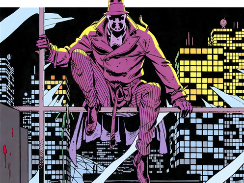

Watchmen is a graphic novel written by Alan Moore and illustrated by Dave Gibbons. The origin of Watchmen is rather complicated. In the mid 80s, DC Comics had acquired several superhero characters from the defunct Charlton Comics and asked Alan Moore to come up with some storyline which would make a good use of them. Moore duly obliged. Alas, the proposed story was deemed too radical as it would have left many of the characters unusable for potential future stories. “DC realised their expensive characters would end up either dead or dysfunctional.” says Moore. For this reason the managing editor of DC Comics, Dick Giordano persuaded Moore to create entirely new characters instead. Moore initially did not like this idea, as he thought that brand new, unknown characters would not provide sufficient emotional response from the readers, but later changed his mind: “Eventually, I realised that if I wrote the substitute characters well enough, so that they seemed familiar in certain ways, [and] certain aspects of them brought back a kind of generic super-hero resonance or familiarity to the reader, then it might work.” If it wasn’t for this decision, Watchmen would likely never come to be, or would wind up as yet another mediocre, unremarkable comic, and would almost certainly never become the industry’s seminal classic, which it turned out to be.
There are things that we did with Watchmen that could only work in a comic, and were indeed designed to show off things that other media can’t - Alan Moore
Watchmen is much more than a mere comic book - its plot eerily echoes the uncertainties and anxieties of the Cold War generation. Moore also uses the story as a clever re-evaluation of the whole weary concept of the American superhero.
The story of Watchmen is set in an alternative history, where two major waves of superheroes, freelance costumed vigilantes, have arisen in the 1940s and 1960s, with the latter one helping the United States to win the Vietnam War. That was a long time ago though and the golden age of the masked heroes, and the gratitude of the general populace for what they have done for their country, is now well and truly over. The United States is on the brink of a nuclear war with the Soviet Union, all costumed vigilantes have been outlawed and most of the former superheroes are in retirement. Lacking their former sense of purpose, some of them find new direction in commerce, other work for government, and yet other operate outside the law, as the costumed vigilante Rorschach. The latter one discovers a wide-ranging conspiracy to assassinate, or otherwise dispose of, all costumed heroes and sets out to investigate who is behind this plot, and warn all his retired comrades. As the mystery unravels, the reader is led deeper and deeper into the real heart of this murky world of costumed vigilantes, and shown a reality that is very different from the general public perception of what it entails to be an American superhero.
Moore and Gibbons designed Watchmen in a way that demonstrates the unique aspects of the comics medium and that highlights all its advantages and strengths. Shortly after the publication of Watchmen, in a 1986 interview, Moore said: “What I’d like to explore is the areas that comics succeed in where no other media is capable of operating” and emphasised this particularly by pointing out the differences between comics and film. This notion became more apparent after the 2009 film adaptation of Watchmen hit the box office and received very polarised reaction not only from both the audiences and the critics, but also from Moore himself, who stated that he has no interest in seeing the film, and refused to have his name attached to it.
The narrative is full of hidden meanings and symbolisms, such as the reoccurring Doomsday Clock in the form of familiarly-yet-ominously-looking blood-stained smiley badge, with its bloody ‘hand’ pointing at ten minutes to twelve. Moore said that Watchmen was deliberately intended to be read four or five times, with some connections and subtle references only becoming apparent after several readings.
Watchmen is meant to be read four or five times, with some connections and references only becoming apparent later, after several consecutive readings.
Watchmen storyline is also entwined with another, completely unrelated story – a fictional pirate comic (pirate because, according to Moore, “in a world where you can meet superheroes in real life, people most likely wouldn’t be interested in superhero comics”) ‘Tales of the Black Freighter’ – which one of the cameo characters reads, making it in effect ‘a comic within a comic’.
So if you have never read Watchmen the comic, but you have seen Watchmen the movie, and you thought the plot was rather convoluted and incomprehensible – you are right – and you have been warned by the author himself.
The storyline is just too complicated and interleaved nuances too subtle and media-dependent for this unique comic book translating properly onto a silver screen. Come on then, go and buy yourself a collected graphic novel of Watchmen (they now come in all shapes and versions, including the Absolute Edition in hardback, containing extra artwork and other bonus material), read it and you will finally understand what Moore meant, when he said: “There are things that we did with Watchmen that could only work in a comic, and were indeed designed to show off things that other media can’t.”
If on another hand, you already have read Watchmen, dust it off and read it again. Chances are that you will find something new. “There’s stuff in there Dave [Gibbons] had put in, that even I only noticed on the sixth or seventh read, while other things ... turned up in there by accident” says Moore.
I, personally, don’t like the ‘classic’ masked superheroes of the American comics scene. They are just too brash for my liking in their preposterous, tacky spandex outfits. So I ridicule Superman, laugh out loud at Spiderman and feel really sorry for Batman, but if there was a single masked vigilante who would inspire me to don a silly mask and hit the vice streets, it would be Watchmen’s Rorschach. And if I would have to recommend you only one comic book, it would be Watchmen.